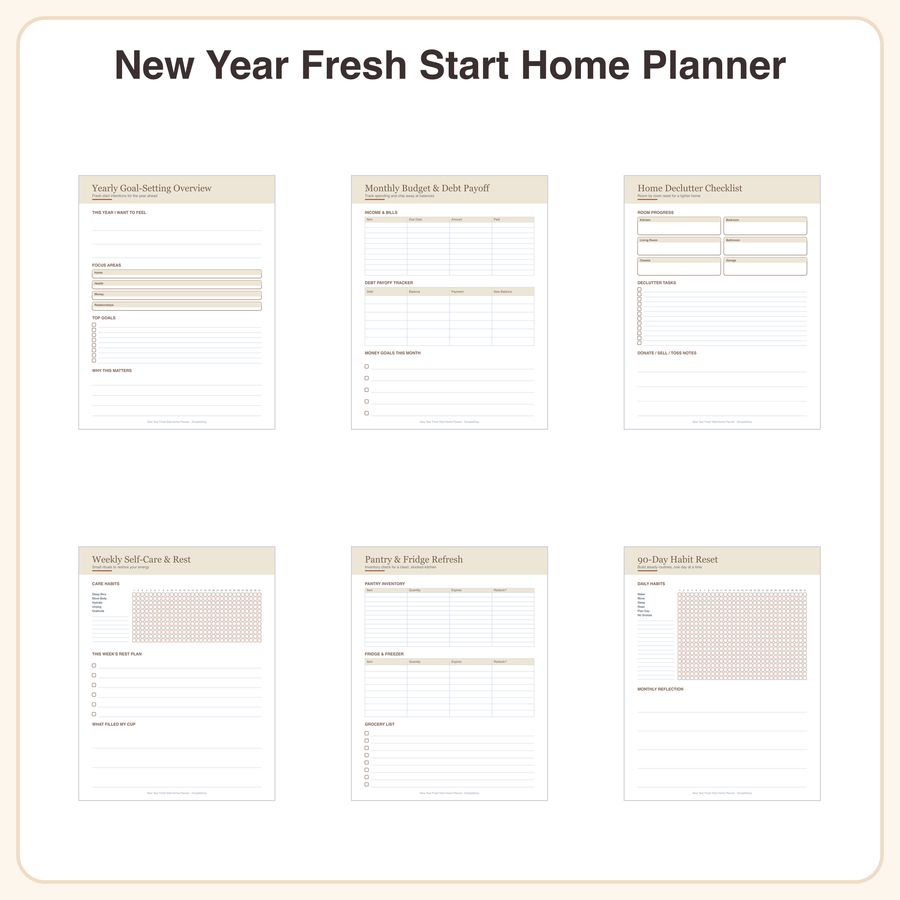

$5.50
View on EtsySkip buying five separate planners this January — this one printable set organizes your home, health, and finances in a single calm, clutter-free document. Designed for anyone craving a fresh start without the overwhelm. What's included (6 planner tools): • Yearly Goal-Setting Overview (1 page) • Monthly Budget & Debt Payoff Tracker (1 page, use monthly) • Home Declutter Checklist by Room (1 page) • Weekly Self-Care & Rest Tracker (1 page, use weekly) • Pantry & Fridge Inventory Refresh Sheet (1 page) • 90-Day Habit Reset Grid (1 page) Style: clean minimal line-art icons in soft terracotta and sage tones on cream pages, with thin serif headers — simple and easy on the eyes. File formats & sizes: • High-resolution PDF, US Letter (8.5x11in) and A4 versions included • Print at home, at a copy shop, or use digitally How to use: • Print and fill in by hand, or import into GoodNotes, Notability, or similar apps for a digital planner experience • Reuse the monthly, weekly, and 90-day pages by printing extra copies License: For personal use and small business use (up to 500 printed/sold units). Please do not resell, share, or redistribute the digital files themselves. Honest disclosure: These designs were created by our shop with the help of AI tools, then refined and laid out by hand for a clean, cohesive planner set. Thank you for supporting a small shop — here's to your fresh start! 🌿